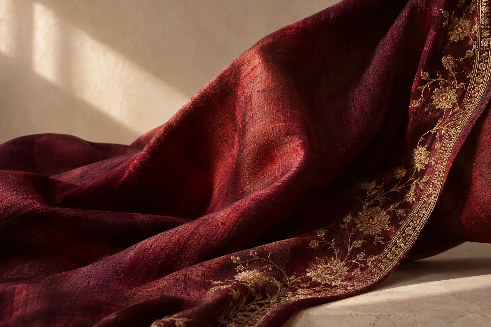

An Indiranagar atelier
Bengaluru, India
A study in individuality
01 — Made around you
The shape
of you.

A favourite fabric.
A personal silhouette.
A piece that feels like you.
Clothes have a shape.
Style has a person.
Lubna’s Designer Wear is a women’s clothing and tailoring boutique on 4th Main Road, Indiranagar. Custom dresses, blouses and individual design conversations sit at the heart of its public customer accounts.
Bring an idea, an occasion or a fabric you love. Start with a conversation about the piece you have in mind.
Speak to the atelier ↗02 / A little material imagination
Before the stitch,
the feeling.
An interactive colour study, not a live fabric catalogue.
Find the feeling.
Let colour begin the conversation.
Give it movement.
Imagine how your fabric might fall.
Make it personal.
Discuss the silhouette with Lubna.
03 / What do you have in mind?
Different pieces.
The same personal starting point.
The blouse
A neckline. A sleeve. A detail.
Begin with the way you want it to feel.
The dress
Your occasion and your ideas,
ready for a tailoring conversation.
The personal piece
Have something else in mind?
Ask what the atelier can create.
A note on personal style
You are not
a standard size
of person.
Make room for something individual.
04 / Let’s start with an idea
Your next
favourite.
Put your thoughts into a short brief.
Then share it directly with the atelier.
Indiranagar II Stage, Bengaluru 560038Find the atelier ↗